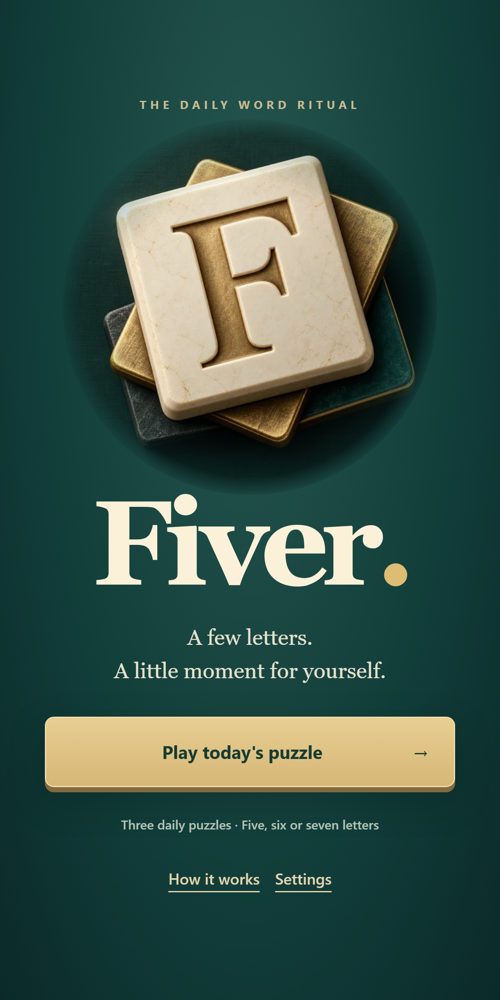
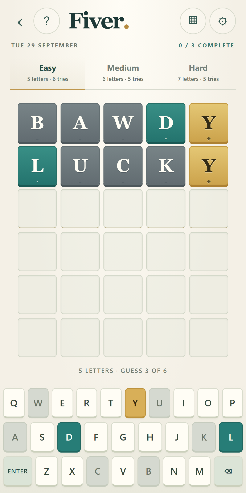
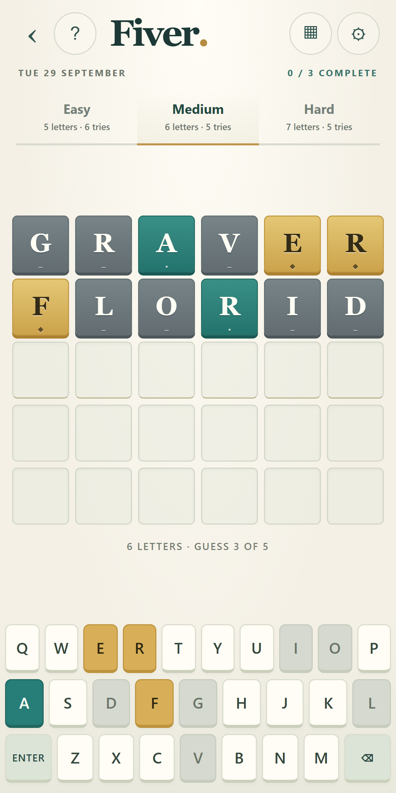
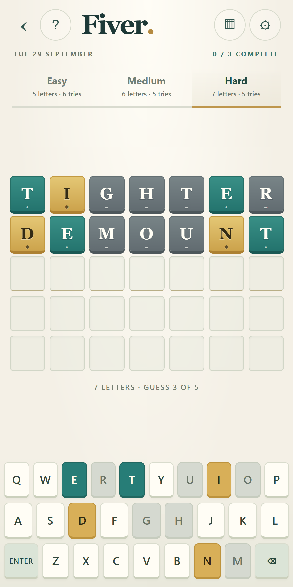

Play Fiver →Fiver.
A daily word ritual in warm paper, ceramic, gold and teal. Finished icon, matching feature artwork and actual gameplay screenshots.
Download the complete artwork pack
Inside the game
Menu and three difficulty boards, captured through real UI input with demonstration guesses.



